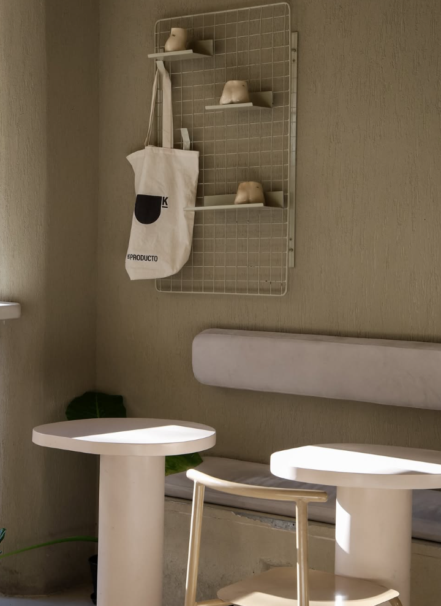

Historia
Ke Producto es un proyecto personal creado por Stefanía Domínguez ("La Patico"), concebido como una forma de reinventarse y tomar las riendas de su vida a través de la alimentación consciente.
Ubicado en Palermo, este espacio se destaca por ofrecer café de especialidad y una propuesta gastronómica 100% keto, sin gluten y low carb, incluyendo opciones como açaí bowls y opciones de brunch saludable.
